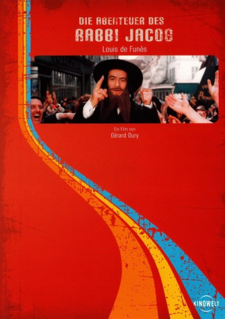

#4472 Die Abenteuer des Rabbi Jacob
Alternativ: The Mad Adventures of 'Rabbi' Jacob (Englischer Titel)
 
 IMDB-Wertung: 7.5 / 10
IMDB-Wertung: 7.5 / 10  Metascore: 0
Metascore: 0 
Der rassistische Industrielle Victor Buntspecht verhilft durch Zufall einem arabischen Revolutionär zur Flucht und wird zum Dank von diesem gewaltsam mitgeschleppt. Als beide auch noch von einem Killerkommando verfolgt werden, versuchen sie, diese in die Irre zu führen und rauben die Kleider zweier Rabbis aus New York. Jetzt geht da Chaos erst wirklich los. Turbulente Komödie mit Louis de Funès.
Jahr: 1973
Dauer: 95 Minuten
FSK: 6
Land: Frankreich Studio: SNCTonspuren: DD2.0 - ,
Untertitel: Deutsch,
Auflösung: 1080p (1808x1080) Größe: 7669 MB
Genre: Komödie
Regisseur: Gérard Oury
Drehbuch: Yann Brion
Soundtrack:
Darsteller:
 Louis de Funès als Victor Pivert
Louis de Funès als Victor Pivert- Suzy Delair als Germaine Pivert
 Marcel Dalio als Rabbi Jacob
Marcel Dalio als Rabbi Jacob Miou-Miou als Antoinette Pivert
Miou-Miou als Antoinette Pivert Jacques François als Le général
Jacques François als Le général Gérard Darmon als Un homme de main de Farès
Gérard Darmon als Un homme de main de Farès André Penvern als Un adjoint d'Andréani
André Penvern als Un adjoint d'Andréani Michel Robin als Le curé des Invalides
Michel Robin als Le curé des Invalides- Christine Boisson als Une invitée au mariage , uncredited
- Claude Giraud als Mohamed Larbi Slimane / Rabbi Zeiligman
- Renzo Montagnani als Le colonel Farès
- Janet Brandt als Tzipé Schmoll, la grand-mère
- André Falcon als Le ministre
- Xavier Gélin als Alexandre, le fils du général
- Henri Guybet als Salomon, le chauffeur de Pivert
- Popeck als Moishe Schmoll
- Denise Provence als Esther Schmoll
- Claude Piéplu als Le commissaire divisionnaire Andreani
- Georges Adet als Le vieux Lévi
- Cherif Adnane als Un homme de main de Farès
- Paul Bisciglia als Le pompiste
- Philippe Brigaud als L'adjoint du ministre
- Noël Darzal als
- Michel Duplaix als Un Policier à Orly
- Robert Duranton als Un CRS à Orly
- Malek Kateb als Aziz, un homme de main de Farès
- Michel Fortin als Un policier motard
- Micheline Kahn als Hannah
- El Kebir als Un homme de main de Farès
- Pierre Koulak als Omar, un homme de main de Farès
- Alix Mahieux als La patiente chez le dentiste
- Maria Gabriella Maione als Olivia, la secrétaire du dentiste
- Catherine Marshall als La femme mannequin
- Gérard Melki als
- Jean-Jacques Moreau als Le motard de la police
- Yves Peneau als
- Denise Péronne als La générale
- Cary Rick als
- Roger Riffard als Un adjoint d'Andréani
- Lionel Spielman als David Schmoll
- Jacob Toledano als
- André Valardy als (scenes deleted
- Dominique Zardi als Le cuisinier de L'Etoile de Kiev
- Ari Aricardi als Un homme rue des Rosiers , uncredited
- Georges Ass als Un homme rue des Rosiers , uncredited
- Baaron als Un participant à la noce noire , uncredited
- Charles Bayard als Un invité au mariage , uncredited
- Guy Bonnafoux als Un homme rue des Rosiers , uncredited
- Robert Chevrigny als Un invité au mariage , uncredited
- Jérôme Deschamps als Un ami d'Alexandre , uncredited
Datei: X:\Person\Louis de Funès\Abenteuer des Rabbi Jacob, Die (1973, FSK6, 1808x1080).mkv seit 26.09.2016
Festplatte: HD Collection-7+mehr(A-Z)+Person
 Es gibt insgesamt 33 Filme in der Gruppe 'Person\Louis de Funès'
Es gibt insgesamt 33 Filme in der Gruppe 'Person\Louis de Funès'